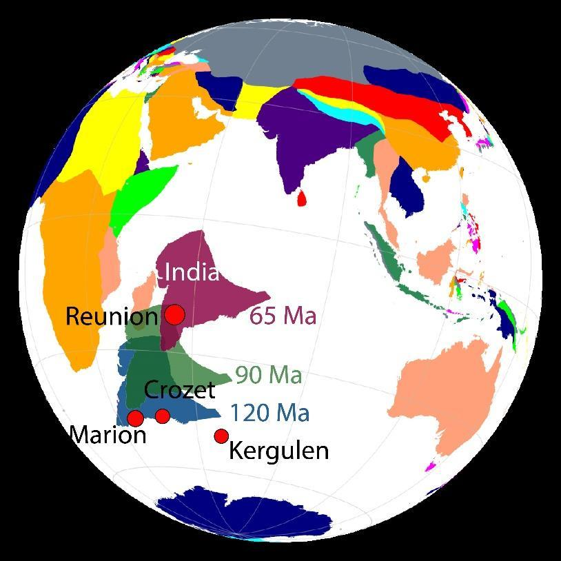

Project Description:
A project assistant position is available at the Geodynamics lab, IISc Bangalore.
We are developing numerical models of plume-lithosphere interaction under the Indian plate.
We have studied the interaction between the Reunion plume and the Dharwar craton and showed
how the plume could destroy the thick cratonic root. We want to investigate the effect of
other plumes (Kerguelen, Marion) on the lithosphere dynamics underneath the Indian plate (Fig. 1).
Your responsibilities:
1. You will develop mantle convection models using CitcomS, a finite element
code to solve convection equations.
2. You will analyse results using Generic Mapping Tool, Shell scripting, python/matlab.
Our responsibilities:
1. We will train how to use CitcomS, GPlates, GMT, Shell scripts and other relevant programming
architecture required for the project.
Requirements:
Though it is not mandatory, anyone experienced with programming languages
(Fortran/python/Matlab/Shell scripting) or familiar with Linux OS will be helpful for the project.
However, interested candidates without experience in programming but having inclination towards
developing skills in coding are also highly encouraged to apply.

Figure: Location of Indian continental lithosphere and hotspot locations since 120 Ma. (Adapted from
Paul and Ghosh, 2022, Geology)